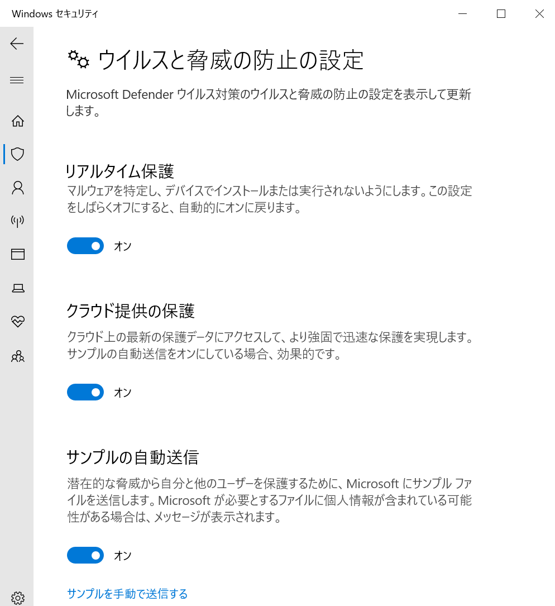
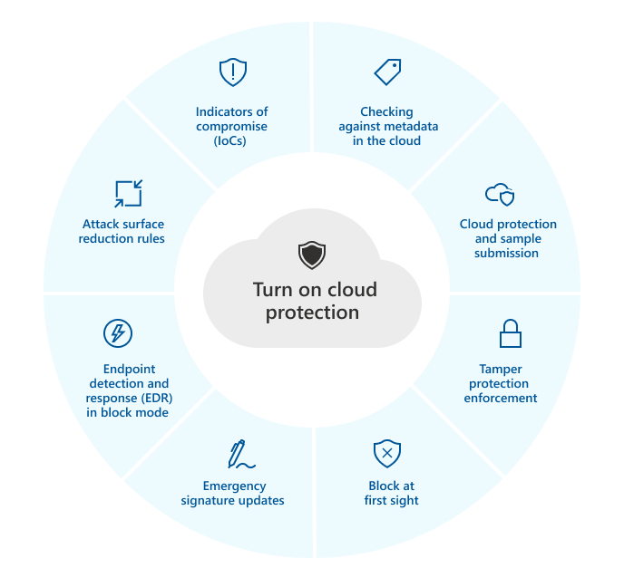
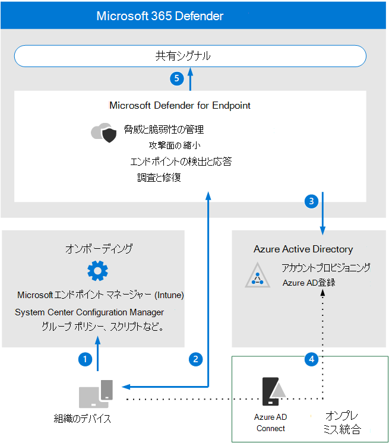
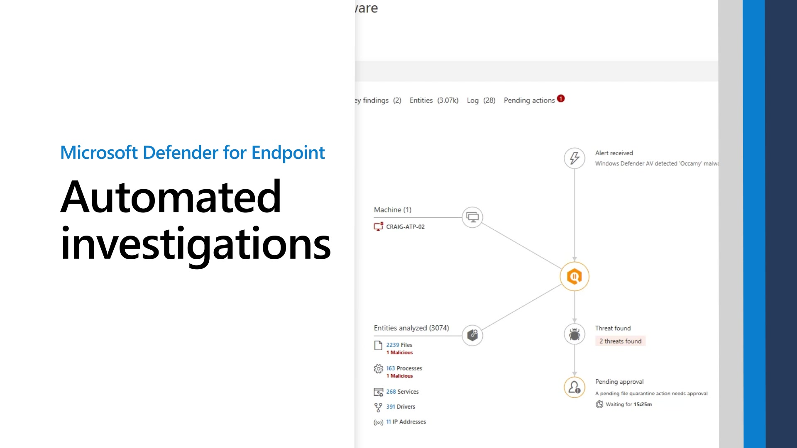
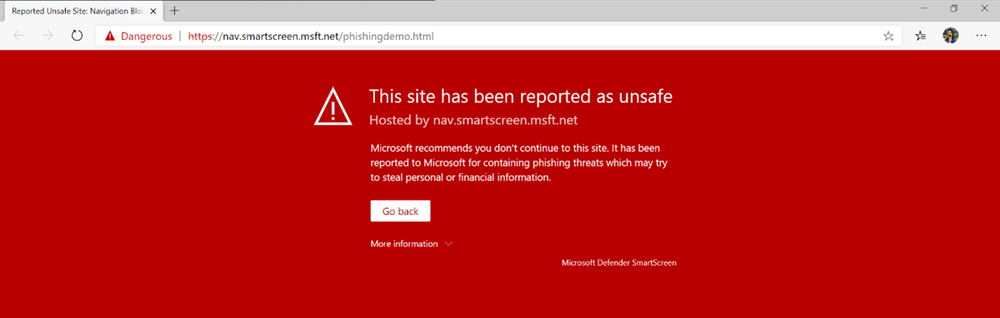
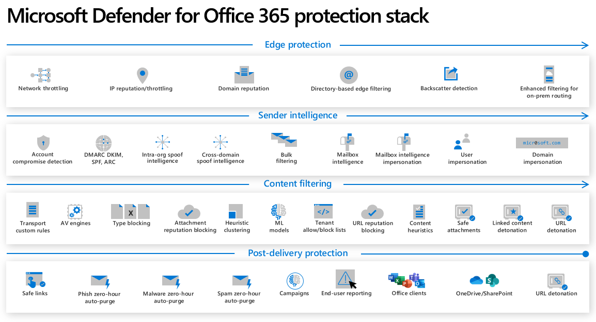
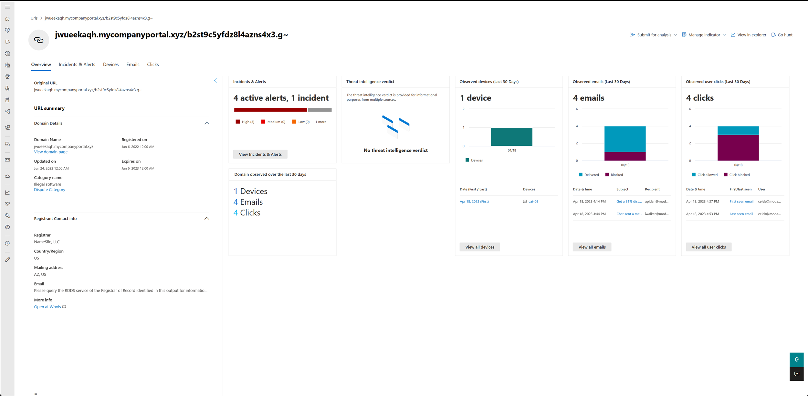

こんにちは。日本マイクロソフト Security & Compliance サポートチームの白木です。
現在わたしたちのチームでは、一緒に CSS (Customer Service & Support) を盛り上げてくださるサポートエンジニアを募集しております。
本記事では、私たち Security & Compliance チームの概要と、どのような製品を担当しているのかについてご案内させていただきます。
本記事の内容
- Security & Compliance チームについて
- 働き方について
- Microsoft Defender ウイルス対策 (MDAV) ってどんな製品？
- Microsoft Defender for Endpoint (MDE) ってどんな製品？
- Microsoft Defender SmartScreen ってどんな製品？
- Microsoft Defender for Office 365 (MDO) ってどんな製品？
- 関連記事
Security & Compliance チームについて
チーム名からお察しいただけます通り、当チームではセキュリティ製品とコンプライアンス製品を担当させていただいております。
セキュリティに関連した製品が非常に多くございます都合から、EP (EndPoint Protection) チームと CPC (Cloud Protection & Compliance) チームに分かれて担当製品を分担しております (2024 年 5 月現在)。
この記事では EP チームの担当する製品についてご紹介をさせていただき、CPC チームの担当する製品は第 2 弾でご紹介させていただきます。
EP チームではエンドポイントを保護するための製品を中心にサポートしております。
主な製品といたしましては、Windows OS 組み込みのアンチウイルスソフトである Microsoft Defender ウイルス対策 (MDAV) や、エンドポイント上の振る舞い監視を提供する EDR (Endpoint Detection & Response) 製品の Microsoft Defender for Endpoint (MDE)、Edge ブラウザを保護する Microsoft Defender SmartScreen があります。
また、2023 年から製品移管が行われており、現在は Messaging Protection 機能を提供する Microsoft Defender for Office 365 (MDO) も担当しております。
働き方について
サポートエンジニアの業務時間は、サポートの窓口の提供時間に合わせて 9:00-17:30 となっています。
ただし、一部のシフト制で稼働するエンジニアは 火-土 で勤務する等、例外的な勤務体制もございます。
また、本番環境においてお客様のビジネスに深刻な影響が発生した際の緊急対応に備え、24 時間単位での緊急体制の待機が求められる場合もあります。
勤務は出社とリモートワークをご自身で選んでいただくことが可能です。
私は概ね週に 1 日のみ出社し、4 日は在宅勤務としておりますが、フルリモート勤務の方や、週 3 程度出社される方もおります。
リモートワークでの働き方につきましては第 3 弾の記事でご紹介しておりますのでこちらもご参照いただければと思います。
Microsoft Defender ウイルス対策 (MDAV) ってどんな製品？

MDAV は Windows 10 以降のクライアント OS や、Windows Server 2016 以降のサーバー OS に既定でインストールされているアンチウイルスソフトです。
リアルタイムスキャンによる脅威検出を提供する [リアルタイム保護] や、クラウドと連携することで新しい脅威の検出を可能にする [クラウド保護]、Office やスクリプトを使った攻撃を防御する [攻撃面の減少ルール (ASR ルール)] 等の機能があります。
Windows でのMicrosoft Defenderウイルス対策の概要
クラウド保護と Microsoft Defender ウイルス対策

Microsoft Defender for Endpoint (MDE) ってどんな製品？

エンドポイント上の不審な動作や挙動を検知し、アラートを生成する EDR (Endpoint Detection & Response) 製品です。
MDAV と異なり、MDE は Windows OS だけでなく Mac, Linux, iOS, Android 等の OS にも対応しています。
無償でご利用いただける MDAV と異なり、MDE をご利用いただく場合はライセンス購入が必要となります。
主な機能といたしましては、上述の通りエンドポイント上の振る舞い監視を提供する [エンドポイントでの検出と応答]、発生したアラートを自動で調査・修復する [自動調査と応答 (AIR)]、ネットワークの分離や調査パッケージの収集、デバイス上で発見された脆弱性に対する推奨事項の提供等があります。

Microsoft Defender SmartScreen ってどんな製品？

Microsoft Defender SmartScreen は Microsoft Edge ブラウザの保護を提供し、不審サイトへのアクセスや、脅威を含む可能性のあるファイルのダウンロードをブロックを提供します。
また、ネットワーク保護を有効化することにより、Google Chrome や Firefox 等のサードパーティ製ブラウザへの保護も提供可能です。
Microsoft Defender SmartScreen
Microsoft Defender for Office 365 (MDO) ってどんな製品？

なりすましメールやフィッシングメール、およびメールに添付された脅威を含むファイルをブロックします。
また、メールに記載された不審な URL の調査や、侵入した脅威に対する自動調査・修復機能などを提供します。
防御機能だけでなく、ユーザー様のトレーニングを目的とした攻撃シミュレーション機能もございます。
Defender for Office 365 の安全な添付ファイル

Microsoft Defender for Office 365での自動調査と対応 (AIR)
関連記事
Security & Compliance チームの紹介記事は第 1 弾から第 5 弾まで公開しています。
以下のリンクから、その他の記事も是非一緒にご覧ください！
<第 1 弾> Security & Compliance サポートチームについて
<第 5 弾> Security & Compliance チームの多様性について
※本情報の内容（添付文書、リンク先などを含む）は、作成日時点でのものであり、予告なく変更される場合があります。